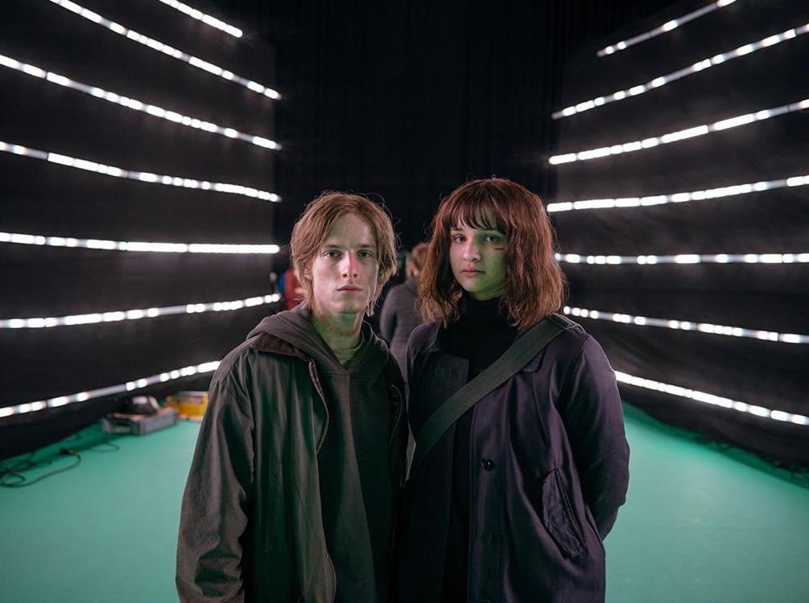
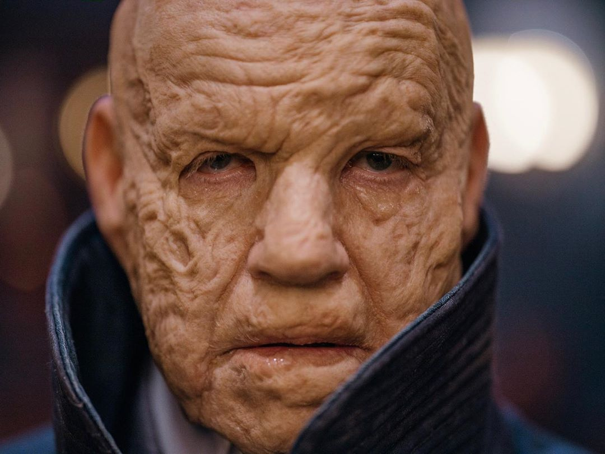
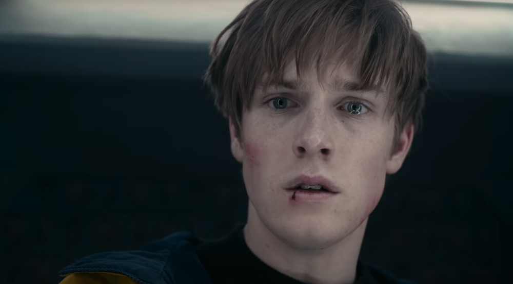

Йонас — главный герой «Тьмы», представленный в трех воплощениях: молодой Йонас (звезда сериала Луис Хофманн) — 17-летний школьник, живущий в 2019 году; Незнакомец — взрослый Йонас, давно путешествующий во времени; и Адам — пожилой Йонас из 1921 года, чье лицо обезображено от частых путешествий.

Он хочет узнать, почему отец покончил с собой. В этом ему помогает Незнакомец, который оставляет ему прощальное письмо отца — в нем тот рассказывает о путешествиях во времени. Йонас идет в пещеру, попадает в 1986 год и видит маленького Миккеля. Йонас намерен вернуть мальчика домой, но его останавливает Незнакомец, объяснив, что в этом случае ход истории нарушится, а значит, сам Йонас никогда не родится.

В 1986 году Йонаса поджидают Ной и взрослый Хельге. Они отправляют подростка в бункер с прототипом машины времени. Перед ним открывается портал, он видит маленького окровавленного Хельге, которого Ульрих бросил в бункер в 1953 году. Соприкоснувшись пальцами, оба переносятся во времени: Хельге — на место Йонаса, а тот — в 2052 год.
В постапокалиптическом будущем Йонас видит кладбище, на котором есть могила Марты — девушки, в которую он влюблен. Юноша встречает повзрослевшую глухонемую Элизабет с последователями, которые пережили конец света. Элизабет скрывает от всех, что на разрушенной АЭС есть портал во времени. За попытку пробраться туда она отправляет Йонаса на виселицу, но не дает ему умереть. У Йонаса появляется шрам на шее. В 2053 году он все-таки добирается до портала, попадает в 1921 год и знакомится с лидером Sic Mundus Адамом — из-за частых путешествий у того обезображенное лицо. Адам демонстрирует шрам на шее, доказывая, что он и есть Йонас (однако существует множество теорий, что это не так).
Цель Адама — оставить неизменным ход истории. Он хочет, чтобы конец света произошел по плану, а после апокалипсиса он мог использовать появившуюся черную материю для создания мира без времени. Его ближайшие соратники — повзрослевшие Магнус Нильсен (сын Ульриха и Катарины) и Франциска Допплер (старшая сестра Элизабет, дочь Шарлотты).
Адам лжет молодому Йонасу и убеждает, что существует событие, при изменении которого петля времени прервется. Йонас отправляется в 2019 год, чтобы помешать отцу покончить с собой. Но, как водится в «Тьме», Йонас сам становится инициатором этого события.
Цель взрослого Йонаса — по совету Клаудии уничтожить червоточину в пещере с помощью цезия (радиоактивных отходов в Виндене в избытке), чтобы разорвать петлю времени, в которой застряли жители города. Но взрыв в пещере создает еще один парадокс: герой уничтожает червоточину, но именно этот взрыв становится причиной ее возникновения.

Йонас взаимно влюблен в Марту Нильсен, сестру Миккеля. Но когда он понимает, что Марта — его тетя, то герой, ничего не объясняя ей, говорит, что им не суждено быть вместе. Шоураннеры сравнивают этот сюжет с греческой трагедией: инцест изначально был важной частью истории; в микромире с четырьмя семьями, которые пересекаются в пяти временных отрезках, его невозможно было избежать.
Все три воплощения Йонаса любят Марту. Даже безжалостный Адам вспоминает о ней, держа в руках кулон со святым Христофором, покровителем путешественников, который Марта подарила юному ему.
В день апокалипсиса, то есть в финале второго сезона, Незнакомец, который знает, что Марта умрет в этот день, запирает ее в бункере, чтобы спасти, но она сбегает и встречает молодого Йонаса. Девушка уже знает, что они родственники, но молодые люди решают, что все-таки созданы друг для друга. Неожиданно появляется Адам и убивает Марту (конец света оказался важнее любви) и говорит Йонасу, что из-за этого события он и станет Адамом. После ухода Адама появляется новая Марта из другой вселенной. С помощью усовершенствованной машины времени за мгновение до апокалипсиса она переносит себя и ошарашенного Йонаса в другое пространство.